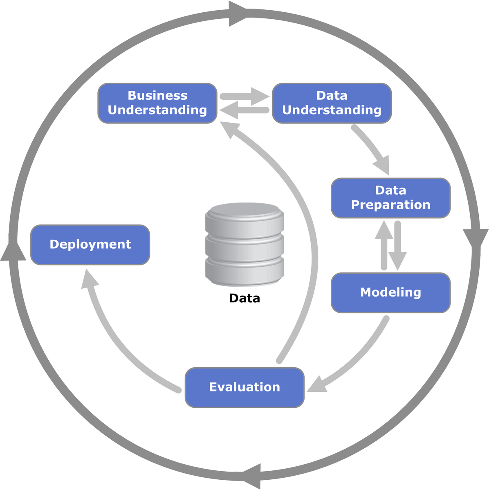

Chapter 2 Introduction
2.1 Topics of the week
During this week, we will cover a lot of basic and nonetheless indispensable tools for a data scientist. We will cover mainly the “boring side” of data science (aka data analysis :P ). As a matter of fact, if machine learning is more and more automatized, everything that is related to data exploration, wrangling, cleaning, understanding and analysis is hardly doable by “AI.”
What’s on our agenda :
- Introduction to R
- Data manipulation
- Introduction to statistics
- Data exploration
- Explainable machine learning (eg regression)
- Data visualization
- Data cleaning
- Dimension reduction
Important notes :
- Of course, it’s not a linear path and the data science workflow is not a simple execution of those steps in a pre-determined order. It’s all connected and you’ll have to move back and forth between all of them to achieve your goal. And this goal, what is it already ?
- In data science is the word “science.” And what is science ? Huge topic… But a few keywords that you should always have in mind when starting a project
- Reproducibility
- Hypothesis testing
- Incremental
- Iterative
- Monitored
2.2 The data science workflow
A very synthetic schematic of the data science workflow

This process is a part of a large workflow :

2.3 About the interactions with other colleagues
The previous iteration loop has to be done taking the business perspective / constraint into account ! More generally, the role of the data scientist is pretty central in use cases development. You will collaborate with other data/IT and business professionals :
Data engineers
Data architects
Software engineers (DevOps)
Machine learning engineers
Data analysts
Data strategists
Program managers / product owners
Business teams
And one challenge is to have all those different profiles working for one common goal and communicate together. My experience is that the data scientist can really put some oil in the machinery, aand one of her/his duty is to bridge the gap between business and IT worlds.
2.4 Resources
You will find a lot of resources online. Here is a selection, mostly related to R. However, our goal for this session is to have you understand how all the methods we will cover are related to each other and when you should consider using them
2.5 Data of the week
In this course, we will handle with my own personal data (I give my consent ! ;) ) Those are my sports activity data, which I got from garmin (thanks to the GDPR). If you want to get your own data from this page. Being a triathlete, there are several sports involved and a lot of activities. The goal will be to import, clean, analyze the data with statistics and eventually build some first models (explainable AI).
The export results in a lot of JSON files and we will focus on the summary data. It’s real world data and you’ll see it’s complicated, dirty and requires a lot of preparation/manipulation !
require(tidyverse)
dat <- read.csv("Data/Sports/Activities_2022.csv",header = T)
glimpse(dat)## Rows: 6,188
## Columns: 88
## $ activityId <dbl> 8117908979, 8112025942, 8111738850, 8106509382, 8101019939, 8100932442, …
## $ uuidMsb <dbl> 1.389057e+18, -8.579595e+18, 4.389923e+18, -3.409299e+18, 8.398595e+18, …
## $ uuidLsb <dbl> -8.816745e+18, -6.087296e+18, -4.813906e+18, -6.907548e+18, -7.204024e+1…
## $ name <chr> "Pool Swimming", "Zwift - WTRL Team Time Trial - Zone 6 (C)", "Zwift - .…
## $ activityType <chr> "lap_swimming", "virtual_ride", "virtual_ride", "running", "virtual_ride…
## $ userProfileId <int> 1141258, 1141258, 1141258, 1141258, 1141258, 1141258, 1141258, 1141258, …
## $ timeZoneId <int> 124, 124, 124, 124, 124, 124, 124, 124, 124, 124, 124, 124, 124, 124, 12…
## $ beginTimestamp <dbl> 1.642184e+12, 1.642096e+12, 1.642094e+12, 1.642009e+12, 1.641928e+12, 1.…
## $ eventTypeId <int> 9, 9, 9, 9, 9, 9, 9, 9, 9, 9, 9, 9, 9, 9, 9, 9, 9, 9, 9, 9, 9, 9, 9, 9, …
## $ rule <chr> "public", "public", "public", "public", "public", "public", "public", "p…
## $ sportType <chr> "SWIMMING", "CYCLING", "CYCLING", "RUNNING", "CYCLING", "CYCLING", "CYCL…
## $ startTimeGmt <dbl> 1.642184e+12, 1.642096e+12, 1.642094e+12, 1.642009e+12, 1.641928e+12, 1.…
## $ startTimeLocal <dbl> 1.642188e+12, 1.642099e+12, 1.642097e+12, 1.642012e+12, 1.641932e+12, 1.…
## $ duration <dbl> 4271050, 2275000, 1707000, 4224043, 622000, 3954000, 4289000, 4297109, 2…
## $ distance <dbl> 340000, 2771270, 1640097, 1499398, 624256, 4927470, 5210229, 320000, 941…
## $ avgSpeed <dbl> 0.0993, 1.2181, 0.9608, 0.3550, 1.0036, 1.2461, 1.2147, 0.0942, 0.3478, …
## $ avgHr <int> NA, 168, 135, 148, 138, 130, 158, NA, 150, 149, 141, 155, 149, 152, NA, …
## $ maxHr <int> NA, 181, 154, 162, 151, 180, 173, NA, 172, 173, 167, 182, 168, 173, NA, …
## $ avgPower <int> NA, 333, 240, NA, 186, 266, 270, NA, NA, 241, 239, NA, 280, 270, NA, NA,…
## $ avgBikeCadence <int> NA, 86, 83, NA, 78, 84, 88, NA, NA, 85, 74, NA, 69, 88, NA, NA, 86, NA, …
## $ maxBikeCadence <int> NA, 104, 200, NA, 100, 103, 120, NA, NA, 109, 114, NA, 108, 103, NA, NA,…
## $ calories <dbl> 3033.5745, 3104.8048, 1638.2978, 3720.7378, 460.9022, 4290.5805, 4701.20…
## $ aerobicTrainingEffect <dbl> NA, NA, NA, 2.4, NA, NA, NA, NA, 2.7, NA, NA, 2.7, NA, NA, NA, 2.7, NA, …
## $ strokes <int> 1390, 0, 0, NA, 0, 0, 0, 1368, NA, 0, 0, NA, 0, 0, 916, NA, 0, NA, 0, NA…
## $ normPower <dbl> NA, 348.5247, 249.8839, NA, 194.3214, 275.7212, 288.8615, NA, NA, 248.72…
## $ avgLeftBalance <dbl> NA, NA, NA, NA, NA, NA, NA, NA, NA, NA, NA, NA, NA, NA, NA, NA, NA, NA, …
## $ avgRightBalance <dbl> NA, NA, NA, NA, NA, NA, NA, NA, NA, NA, NA, NA, NA, NA, NA, NA, NA, NA, …
## $ max20MinPower <dbl> NA, 342.2592, 252.1425, NA, NA, 291.5917, 298.7442, NA, NA, 256.8575, 29…
## $ avgFractionalCadence <dbl> 0.0000000, 0.0000000, 0.0000000, 0.1562500, 0.0000000, 0.0000000, 0.0000…
## $ maxFractionalCadence <dbl> 0.0, 0.0, 0.0, 0.5, 0.0, 0.0, 0.0, 0.0, 0.5, 0.0, 0.0, 0.5, 0.0, 0.0, 0.…
## $ trainingStressScore <dbl> NA, NA, NA, NA, NA, NA, NA, NA, NA, NA, NA, NA, NA, NA, NA, NA, NA, NA, …
## $ intensityFactor <dbl> NA, NA, NA, NA, NA, NA, NA, NA, NA, NA, NA, NA, NA, NA, NA, NA, NA, NA, …
## $ elapsedDuration <dbl> 4685234, 2273000, 1706000, 4293429, 620000, 3953000, 4288000, 4505565, 2…
## $ movingDuration <dbl> 3466198, 2270000, 1706000, 4220701, 618000, 3950000, 4284000, 3427362, 2…
## $ anaerobicTrainingEffect <dbl> NA, NA, NA, 0.0, NA, NA, NA, NA, 0.0, NA, NA, 0.8, NA, NA, NA, 0.0, NA, …
## $ deviceId <dbl> 3968818126, 3825981698, 3825981698, 3968818126, 3825981698, 3825981698, …
## $ minTemperature <int> 26, NA, NA, 7, NA, NA, NA, 26, 7, NA, NA, 13, NA, NA, 27, 14, NA, 24, NA…
## $ maxTemperature <int> 27, NA, NA, 24, NA, NA, NA, 26, 23, NA, NA, 25, NA, NA, 27, 26, NA, 27, …
## $ lapCount <int> 39, 1, 1, 15, 1, 1, 1, 34, 10, 1, 1, 12, 1, 1, 26, 17, 1, 1, 1, 13, 1, 1…
## $ aerobicTrainingEffectMessage <lgl> NA, NA, NA, NA, NA, NA, NA, NA, NA, NA, NA, NA, NA, NA, NA, NA, NA, NA, …
## $ anaerobicTrainingEffectMessage <lgl> NA, NA, NA, NA, NA, NA, NA, NA, NA, NA, NA, NA, NA, NA, NA, NA, NA, NA, …
## $ purposeful <int> 0, 0, 0, 0, 0, 0, 0, 0, 0, 0, 0, 0, 0, 0, 0, 0, 0, 0, 0, 0, 0, 0, 0, 0, …
## $ autoCalcCalories <int> 0, 0, 0, 0, 0, 0, 0, 0, 0, 0, 0, 0, 0, 0, 0, 0, 0, 0, 0, 0, 0, 0, 0, 0, …
## $ favorite <int> 0, 0, 0, 0, 0, 0, 0, 0, 0, 0, 0, 0, 0, 0, 0, 0, 0, 0, 0, 0, 0, 0, 0, 0, …
## $ pr <int> 0, 0, 0, 0, 0, 0, 0, 0, 0, 0, 0, 0, 0, 0, 0, 0, 0, 0, 0, 0, 0, 0, 0, 0, …
## $ elevationCorrected <int> 0, 0, 0, 0, 0, 0, 0, 0, 0, 0, 0, 0, 0, 0, 0, 0, 0, 0, 0, 0, 0, 0, 0, 0, …
## $ atpActivity <int> 0, 0, 0, 0, 0, 0, 0, 0, 0, 0, 0, 0, 0, 0, 0, 0, 0, 0, 0, 0, 0, 0, 0, 0, …
## $ parent <int> 0, 0, 0, 0, 0, 0, 0, 0, 0, 0, 0, 0, 0, 0, 0, 0, 0, 0, 0, 0, 0, 0, 0, 0, …
## $ elevationGain <dbl> NA, 32500, 7600, 16000, 3800, 26600, 26600, NA, 10400, 48900, 91800, 143…
## $ elevationLoss <dbl> NA, 0, 0, 18300, 0, 0, 0, NA, 10300, 0, 0, 15200, 0, 0, NA, 14400, 0, 0,…
## $ maxSpeed <dbl> 0.3865, 1.9172, 1.2852, 0.4161, 1.6083, 1.7015, 1.7127, 0.1327, 0.3956, …
## $ maxRunCadence <int> NA, NA, NA, 112, NA, NA, NA, NA, 94, NA, NA, 92, NA, NA, NA, 92, NA, NA,…
## $ steps <int> NA, NA, NA, 12014, NA, NA, NA, NA, 7832, NA, NA, 9830, NA, NA, NA, 13782…
## $ startLongitude <dbl> NA, 0.000000, 0.000000, 16.315890, 0.000000, 0.000000, 0.000000, NA, 16.…
## $ startLatitude <dbl> NA, 0.00000, 0.00000, 48.21407, 0.00000, 0.00000, 0.00000, NA, 48.21414,…
## $ avgVerticalOscillation <dbl> NA, NA, NA, 8.26, NA, NA, NA, NA, 8.57, NA, NA, NA, NA, NA, NA, NA, NA, …
## $ avgGroundContactTime <dbl> NA, NA, NA, 248.1, NA, NA, NA, NA, 236.8, NA, NA, NA, NA, NA, NA, NA, NA…
## $ avgStrideLength <dbl> NA, NA, NA, 118.2400, NA, NA, NA, NA, 116.2000, NA, NA, 121.2003, NA, NA…
## $ vO2MaxValue <int> NA, NA, NA, 60, NA, NA, NA, NA, 59, NA, NA, 60, NA, NA, NA, 59, NA, NA, …
## $ avgVerticalRatio <dbl> NA, NA, NA, 6.83, NA, NA, NA, NA, 7.25, NA, NA, NA, NA, NA, NA, NA, NA, …
## $ avgGroundContactBalance <dbl> NA, NA, NA, 48.93, NA, NA, NA, NA, 49.17, NA, NA, NA, NA, NA, NA, NA, NA…
## $ minElevation <dbl> NA, 120, 12180, 19480, 400, 1040, 1040, NA, 25160, -620, 27880, 8120, 72…
## $ maxElevation <dbl> NA, 5780, 13040, 34900, 2900, 3400, 3400, NA, 34080, 2300, 69580, 15160,…
## $ avgDoubleCadence <dbl> NA, NA, NA, 172.3125, NA, NA, NA, NA, 173.7969, NA, NA, 174.8281, NA, NA…
## $ maxDoubleCadence <int> NA, NA, NA, 225, NA, NA, NA, NA, 189, NA, NA, 185, NA, NA, NA, 185, NA, …
## $ locationName <chr> NA, NA, NA, "Vienna", "Tower Hamlets", "Thio", "Thio", NA, "Vienna", NA,…
## $ maxVerticalSpeed <dbl> NA, 0.11999998, 0.05999985, 0.10000000, 0.06000004, 0.06000004, 0.060000…
## $ endLongitude <dbl> NA, 166.9529124, 165.8442626, 16.3033489, -0.1127895, 166.1724174, 166.1…
## $ endLatitude <dbl> NA, -11.63601, -10.79433, 48.21414, 51.49451, -21.73831, -21.74362, NA, …
## $ avgStrokes <dbl> 22.4, NA, NA, NA, NA, NA, NA, 23.6, NA, NA, NA, NA, NA, NA, 10.9, NA, NA…
## $ activeLengths <int> 68, NA, NA, NA, NA, NA, NA, 64, NA, NA, NA, NA, NA, NA, 84, NA, NA, NA, …
## $ avgSwolf <int> 73, NA, NA, NA, NA, NA, NA, 77, NA, NA, NA, NA, NA, NA, 36, NA, NA, NA, …
## $ poolLength <dbl> 5000, NA, NA, NA, NA, NA, NA, 5000, NA, NA, NA, NA, NA, NA, 2500, NA, NA…
## $ avgStrokeDistance <dbl> 223, NA, NA, NA, NA, NA, NA, 212, NA, NA, NA, NA, NA, NA, 229, NA, NA, N…
## $ avgSwimCadence <int> 27, NA, NA, NA, NA, NA, NA, 27, NA, NA, NA, NA, NA, NA, 26, NA, NA, NA, …
## $ maxSwimCadence <int> 31, NA, NA, NA, NA, NA, NA, 30, NA, NA, NA, NA, NA, NA, 29, NA, NA, NA, …
## $ workoutId <dbl> NA, NA, NA, NA, NA, NA, NA, NA, NA, NA, NA, NA, NA, NA, NA, NA, NA, NA, …
## $ activeSets <int> NA, NA, NA, NA, NA, NA, NA, NA, NA, NA, NA, NA, NA, NA, NA, NA, NA, NA, …
## $ totalSets <int> NA, NA, NA, NA, NA, NA, NA, NA, NA, NA, NA, NA, NA, NA, NA, NA, NA, NA, …
## $ totalReps <int> NA, NA, NA, NA, NA, NA, NA, NA, NA, NA, NA, NA, NA, NA, NA, NA, NA, NA, …
## $ parentId <dbl> NA, NA, NA, NA, NA, NA, NA, NA, NA, NA, NA, NA, NA, NA, NA, NA, NA, NA, …
## $ manufacturer <lgl> NA, NA, NA, NA, NA, NA, NA, NA, NA, NA, NA, NA, NA, NA, NA, NA, NA, NA, …
## $ courseId <dbl> NA, NA, NA, NA, NA, NA, NA, NA, NA, NA, NA, NA, NA, NA, NA, NA, NA, NA, …
## $ maxFtp <int> NA, NA, NA, NA, NA, NA, NA, NA, NA, NA, NA, NA, NA, NA, NA, NA, NA, NA, …
## $ avgVerticalSpeed <int> NA, NA, NA, NA, NA, NA, NA, NA, NA, NA, NA, NA, NA, NA, NA, NA, NA, NA, …
## $ decoDive <int> 0, 0, 0, 0, 0, 0, 0, 0, 0, 0, 0, 0, 0, 0, 0, 0, 0, 0, 0, 0, 0, 0, 0, 0, …
## $ lactateThresholdBpm <int> NA, NA, NA, NA, NA, NA, NA, NA, NA, NA, NA, NA, NA, NA, NA, NA, NA, NA, …
## $ lactateThresholdSpeed <dbl> NA, NA, NA, NA, NA, NA, NA, NA, NA, NA, NA, NA, NA, NA, NA, NA, NA, NA, …2.6 Your mission
The data we will use as an example is quite messy, but it is a rather traditional tye of data that we will handle. However, you will face diverse type of data : time series, graphs, geospatial, panel,… That will require different analytical tools but also different ways to handle those objects. To provide you with a taste of those challenges ahead, your mission will be the following :
- Select the most important metrics of the activities (distance, duration, speed, power, elevation, heart rate….) and create monthly time series out of it (you will have to aggregate it ; please choose wisely how to aggregate : simple average can be inaccurate for ratios). Pick 4 of them.
- Learn by yourself the basics of time series and please describe for the chosen time series :
- Draw the autocorrelation function
- Is there a trend ?
- Is there a seasonal pattern ?
- Are those series stationary ? With which level of confidence can you assert so ? Please use 2 different tests.
- Prediction is the most common ML task for time series. Try the
prophetandauto.arimaalgorithms to predict each time series 12 months ahead. What can you conclude ?